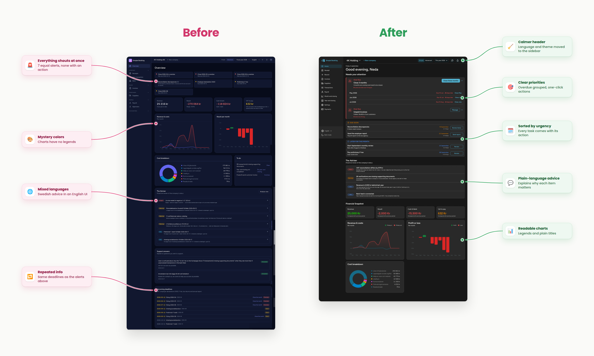
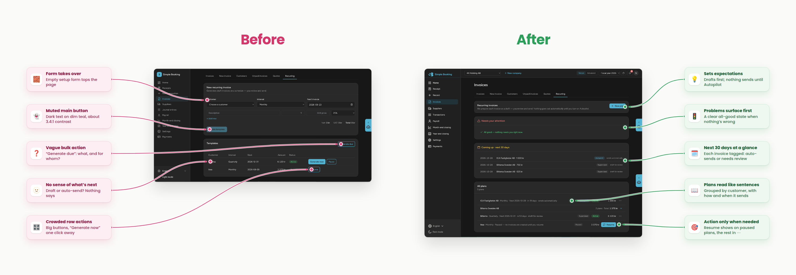
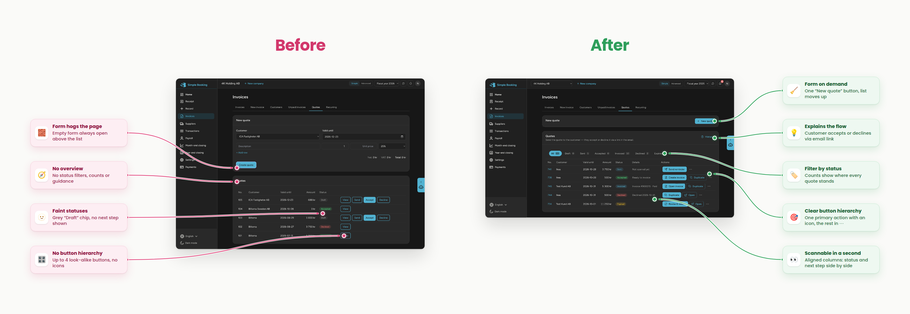
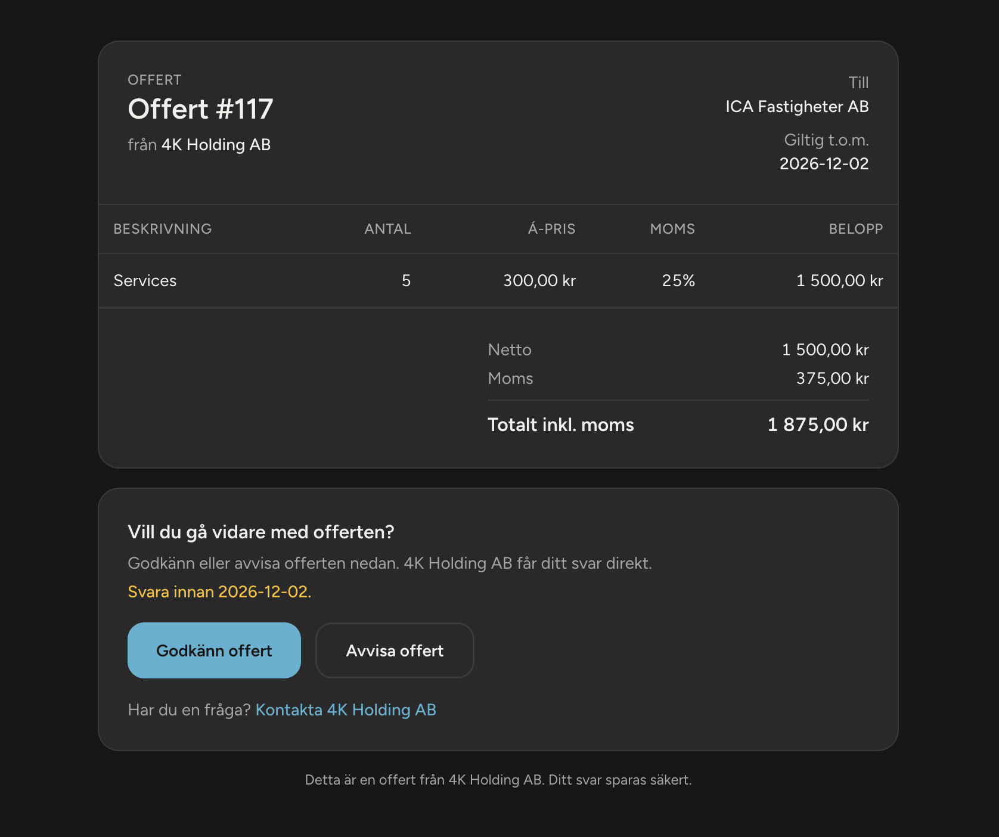
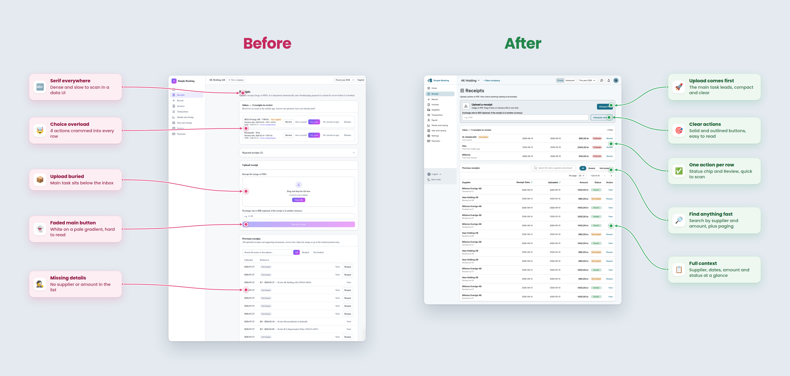
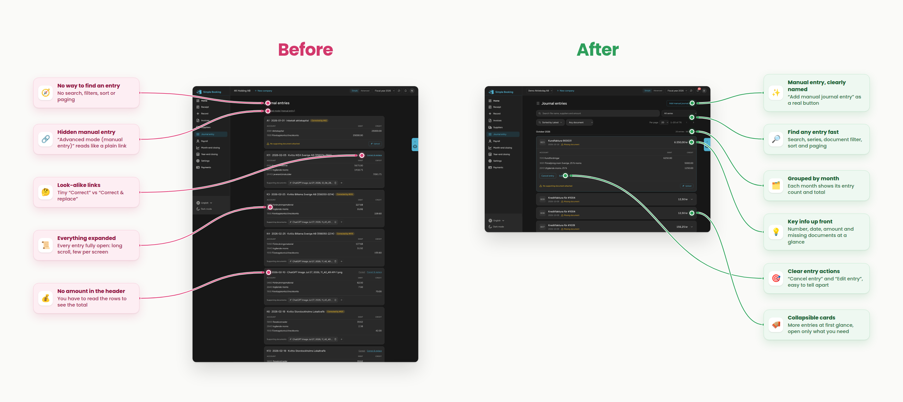
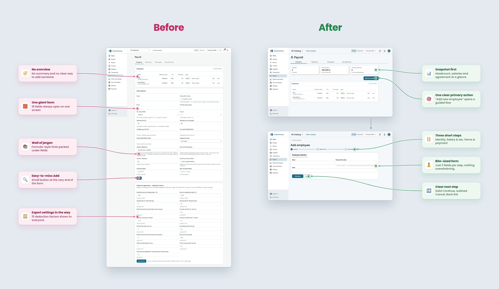
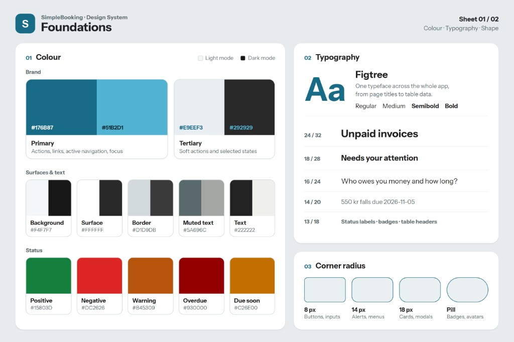
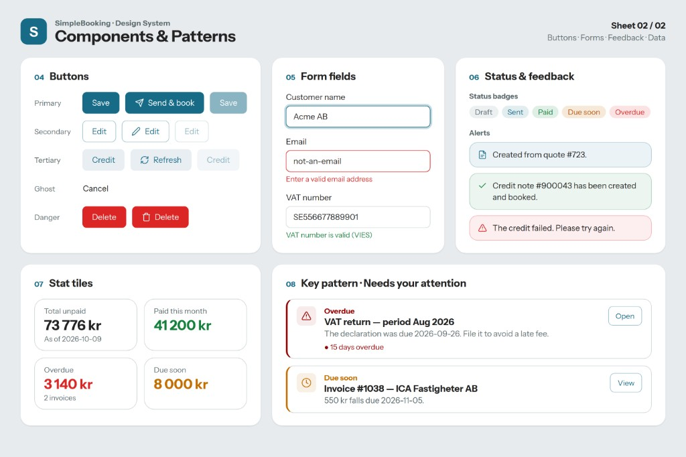

The problem
A big accounting app, built by developers without a designer and never tested with users. Its core workflows were confusing, cluttered and sometimes unfinished.
What I did
Reviewed the whole app, built a roadmap with the PM, and ran workshops on each core area with all three real users. Then I restructured the information architecture, redesigned those areas, proposed and designed Adviser, an AI assistant, and built the new UI myself with Claude Code.
Key decisions
- Adviser, an AI assistant that answers from the owner's own numbers and never acts without confirmation
- An Overview sorted by urgency
- Clear statuses everywhere
- Search and filters for long lists
- Payroll in small steps
Status
redesigned and built
Formal testing of V2 is next.
Ongoing
The challenge
Simple Booking makes a bold promise: a Swedish small business can do its own accounting, from invoices to VAT and year-end, without paying an accountant. The stakes are real: bookkeeping rules are strict, deadlines come with penalties, and most owners aren't accountants. Every time an owner gets stuck, they contact support or hire an accountant, and the promise breaks.
When I joined, the product was already big, but it was built around the database, not around people. There was no clear hierarchy, statuses were missing, some parts were unfinished, and the app expected users to know accounting.
The one question
So every decision had to answer one question:
can someone without accounting knowledge do this alone?
My role
- Sole product designer, working side by side with the PM and the back-end team.
- From an expert review and workshops to final screens.
- I build the front-end myself with Claude Code.
- I proposed and designed Adviser, an AI assistant.
What we found
I reviewed the whole app and ranked each part with the PM by business importance and how badly it was broken. Then I ran workshops and in-context testing with all three real users, small business owners in Stockholm, doing real tasks in their own work. Four findings shaped the work:
- Nothing told users what to do first. The Overview was one big block of repeated information.
- Statuses were missing or all the same grey. Users had to read carefully to know if something was sent, paid or overdue.
- Long lists had no search or filters. Finding one transaction meant scrolling through everything.
- Long forms felt repetitive, even when nothing was repeated. "I filled in this option above. Why is the system asking me to fill it in again?"
From findings to principles
I turned the findings into five principles, and I check every new screen against them:
- Show what matters first → from the Overview
- Make status visible → from Invoices, Quotes and Receipts
- Make things easy to find → from Journal entries and Invoices
- One clear next step → from Quotes
- Less at once → from Payroll
Information architecture
I restructured the app around how owners think about their business, not around the database. The Overview comes first, and the rest of the work is grouped into five clear areas.
Adviser
Available on every page, in a side panel
Overview
What needs your attention, first
Everyday
Receipts · New transaction · Bank
Sales
Invoices · Quotes · Recurring invoices
Purchases
Suppliers
People
Payroll · Approvers
Accounting
Journal entries · Reports · Reconciliation
When simpler screens weren't enough
Make the screens simpler
Never leave people alone with a question
As the redesign moved forward, the team kept talking about simplicity. But accounting can't be made simple by removing things: every feature was needed. Clearer screens would help people find things, but not understand them.
The idea came from my own first weeks. I was new, my manager was busy, and I kept wishing someone could answer my questions right away. When I have a question these days, I don't search first. I ask an AI. Our users were in the same position, just with more at stake.
The aha moment
Simplicity wasn't about showing less. It was about never leaving people alone with a question.
The team was focused on launching the MVP quickly, and Adviser meant more work. So I designed a prototype in two hours and showed them. Once they saw how many problems one assistant could solve, they were genuinely excited, and we decided to build it.
Four decisions
Adviser came out of the turning point. The other three decisions made the core screens clearer, alongside it.
Decision 1 · An adviser people can trust
Accounting is the last place for an AI that guesses. Adviser answers from the owner's own numbers and never records anything without confirmation. I worked with the back-end team through many sessions to shape how it works, then designed it and built its front-end.

- Answers from your own numbers: users ask in their own words and get answers from the company's real figures.
- Takes you to the right place (My idea): every answer links to the page where you can act.
- Flags what needs attention (My idea): missing receipts and upcoming deadlines appear before they become penalties.
- Suggests, never acts alone: nothing is recorded until the user confirms.
- Never stuck: when it can't help, it creates a support ticket with a short summary.
- Speak instead of type (My idea): users talk, pause, and hear the answer read aloud.

Decision 2 · An Overview that starts with what needs attention
The Overview is organised by time: one "Needs your attention" list first, then "Due soon" and "Later this month", a separate financial snapshot, and one-click actions with plain-language advice.
Overview · before and after

Decision 3 · Statuses and next steps you can read at a glance
Invoicing is what owners do most often, so it had to feel easy. I designed the invoice's whole journey as colour-coded statuses. Before adding reminders, I looked at how competitors handle late payments and checked the idea with two users.
The invoice journey
-
Overdue
Not paid by the due date
-
Credited
Cancelled or corrected with a credit invoice
Recurring invoices · before and after

Quotes got one clear next action per row and a new flow: owners send a quote by email or as a link the customer can accept or decline without signing in.
Quotes · before and after

The customer's view

- No account needed
- Answer sent instantly
Receipts got a compact upload, a date column and colour-coded statuses.
Receipts · before and after

Decision 4 · Long lists and long forms, made manageable
Journal entries, the longest list in the app, got search by any value, filters, sorting and collapsible cards. Payroll's two long forms became three short steps with a progress indicator: more clicks, but fewer fields at a time.
Journal entries · before and after

Payroll · before and after

Design system
Before redesigning screen by screen, I built a design system, keeping what worked and improving the rest. Claude Code uses the same colours, type and components as my Figma file, so every screen looks and behaves the same.
Sheet 01 · Foundations

Sheet 02 · Components

Where it is now
About half of the app is redesigned and built. Next is formal usability testing of V2 with the same three users and the same tasks, comparing V1 and V2 on task completion and errors. Until then, this page shows my decisions, not results.
50%
of the whole app built
6
core areas redesigned
3
real users in every workshop
Next
formal V2 testing
What I learned
- Three users can teach you a lot. Working with every real user on every core area went deeper than a bigger, quicker study would have.
- "Feels repetitive" is a real problem. If something feels complicated, it needs fixing, even when the data is correct.
- What I'd do differently: I'd add short sessions with a few new users, to check that the patterns hold as the product grows.